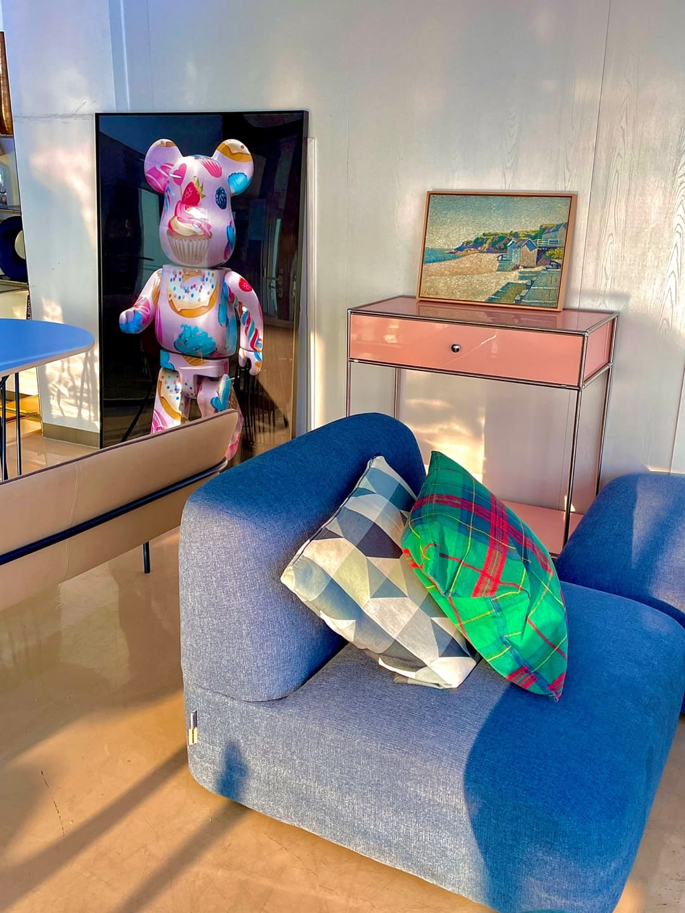
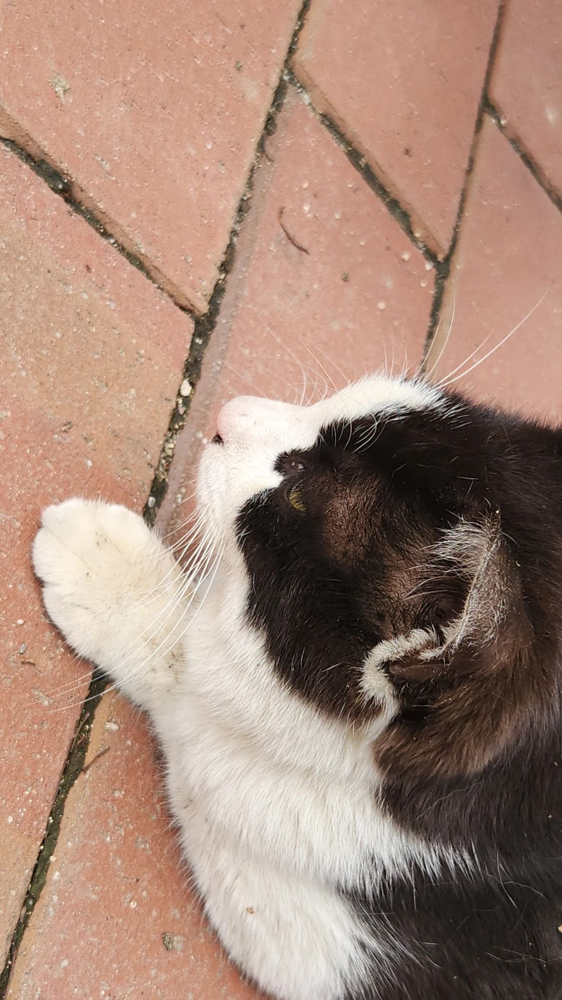
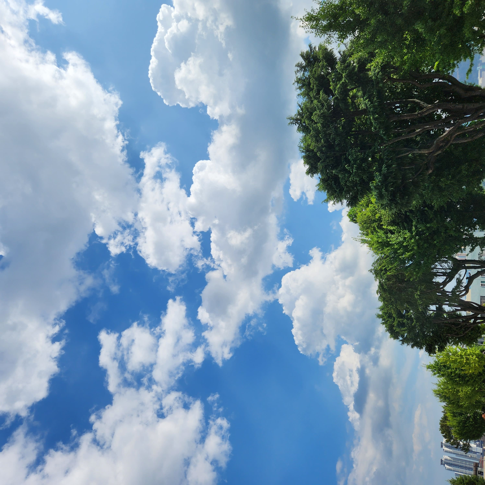
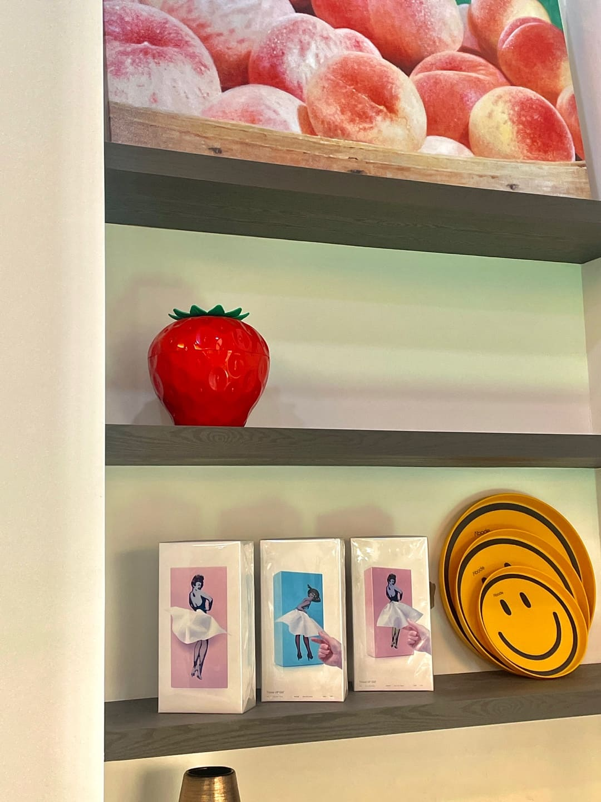
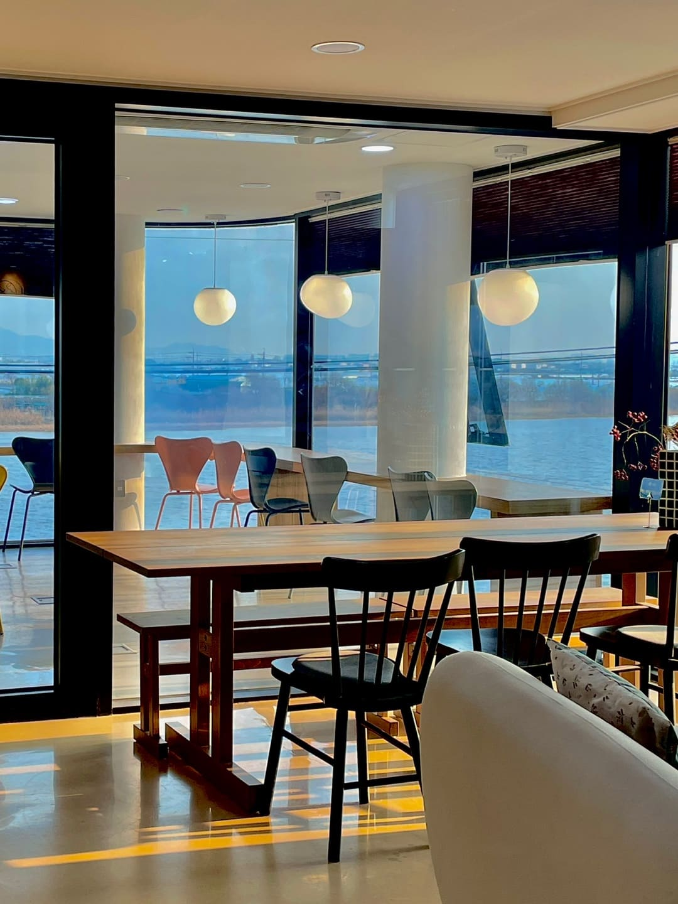
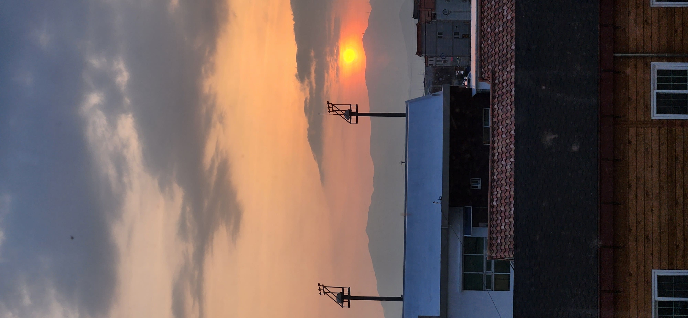
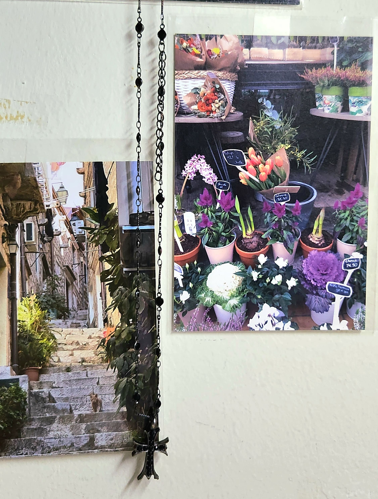
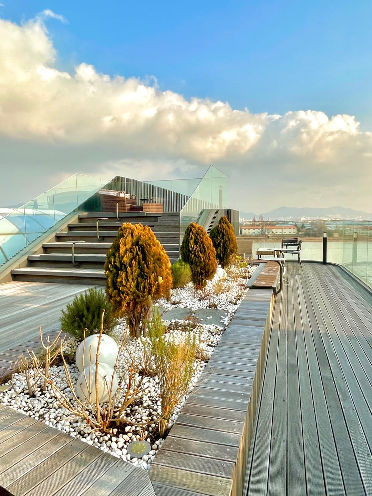

푸른 무드등

무드 등은 놔두기만 해도 매력적인 분위기를 제공한다. 무드 등은 조명의 색상과 밝기를 조절하여 다채로운 분위기를 연출한다. 또한, 일상에서 벗어나 특별한 분위기를 조성하여 나만의 휴식같은 특별한 순간을 만들어 줄 수 있다. 무드 등은 스트레스와 긴장을 해소하고 안정감을 주는 역할도 합니다.
벚꽃 나무

벚꽃은 아름다운 꽃잎과 연한 분홍빛으로 사랑스럽고 로맨틱한 분위기를 연출한다. 봄이 오면 나무에 만개하는 그 모습은 마치 자연이 입는 듯한 환상적인 풍경을 만들어낸다. 또한, 벚꽃은 한정된 기간 동안만 피어나는 특별한 꽃으로, 그 순간을 놓치지 않고 감상하고 싶은 욕구를 자극한다. 봄철에는 따뜻한 날씨와 함께 벚꽃 구경을 즐기는 문화가 있어서,많은 분들이 모여 함께 즐기기도 한다. 벚꽃은 새로운 시작과 희망의 상징으로 여겨지기도 한다.
파란 쇼파
쨍한 색과 대비되는 색의 가구들로 특이한 분위기를 연출한다. 특히 뒤에 있는 액자 속에 밝은 곰 모양 그림과 검은 배경색이 눈에 띄고있다. 또한 빈티지한 느낌의 핑크색 선반이 마음에 들었다. 뒤에 있는 큰 액자에 있는 곰 형상 그림은 브릭베어가 있습니다. 햇빛이 들어와서 벽에 반짝거리는 느낌이 나는 것도 정말 예쁘다.
길 고양이
영남대학교 중앙 도서관 앞에서 만난 고양이 이다. 고양이는 그들만의 우스꽝스러운 행동으로 보는 이에게 즐거움을 준다. 고양이의 호기심 많은 모습이 보는 이로 하여금 관심을 끈다. 또한, 고양이는 마음을 편안하게 해주는 영향력이 크다. 고양이는 스트레스 해소에 도움이 된다. 고양이는 독립적인 성격을 가졌지만 동시에 사랑스럽고 다정한 모습을 보여준다. 고양이를 바라보는 것은 마음을 차분하게 만들어주며, 그들의 울음소리와 귀엽고 깜찍한 모습은 우리에게 웃음을 선사한다.
하늘
하늘은 우리에게 자유와 평화를 상기시키는 요소이다. 하늘은 끝없이 펼쳐진 공간에 다양한 요소가 어우러진다. 우리에게 매번 새로운 풍경을 선사한다. 또한, 하늘은 변화무쌍한 요소이다. 기상의 변화에 따라 하늘의 모습도 항상 변화한다. 그 순간의 아름다움을 놓치지 않고 감상하게 된다. 마지막으로, 하늘은 우주의 신비로움과 우리 존재의 일부임을 상기시켜 준다. 이 모든 이유로 하늘 풍경은 우리에게 끊임없는 감동과 영감을 주는 존재이다.
딸기 물병과 접시
딸기 모양 물병이랑 웃는 표정 접시가 마음에 들었다. 딸기모양 물병, 스마일 접시, 복숭아 그림액자는 그들만의 독특한 매력이 있다. 딸기모양 물병은 그 색감과 모양 때문에 주변의 시선을 사로잡는다. 딸기의 상징인 붉은 색과 그 형태가 상쾌하고 활기찬 느낌을 전달한다. 스마일 접시는 그 모양에서 나오는 유쾌함과 밝은 분위기가 사람들의 마음을 환기시킨다. 스마일 모양의 디자인은 자연스럽게 사람들에게 웃음을 머금게 한다. 복숭아 그림액자는 그 안에 담긴 아름다운 그림이나 이미지로 인해 주변의 이목을 끈다. 복숭아의 색감과 모양은 자연의 아름다움을 상징한다. 그림액자를 통해 그 아름다움을 감상할 수 있습니다.
카페
통유리창이 있는 나무 테이블 있는 카페는 아늑하고 현란한 분위기를 자아낸다. 통유리창은 자연의 빛과 풍경으로 공간을 밝고 개방적으로 만든다. 나무 테이블은 자연스러운 따뜻함과 고급스러움을 더하여 카페 분위기를 한층 높여준다. 편안하고 편리한 분위기를 제공한다. 일상에서 벗어나 즐거운 시간을 보낼 수 있도록 한다. 또한, 통유리창으로부터 들어오는 자연의 빛과 나무 테이블의 자연스러운 모습은 차분한 휴식과 함께 손님들에게 휴식을 제공하여 일상 생활의 스트레스를 잊을 수 있도록 도와준다.
일몰
일몰은 아름다움과 감동적인 순간 이다. 일몰은 하늘과 대지가 만나는 그 순간으로, 태양이 지평선 뒤로 서서히 사라지면서 하늘과 구름, 대지를 환상적인 빛으로 물들인다. 이 광경은 우리에게 평온함과 감동을 선사한다. 하루의 마무리를 의미있게 만들어준다. 또한, 일몰은 자연의 순환과 변화를 느끼게 해준다. 특히, 해가 지는 과정에서 나타나는 색채의 변화와 그에 따른 하늘의 표정 변화가 예쁘다.
엽서
꽃 엽서와 풀이 있는 길엽서는 각각의 독특한 매력을 가지고 있다. 꽃 엽서는 아름다운 꽃의 이미지를 담고 있다. 다양한 꽃의 종류와 색감은 각기 다른 감성과 느낌을 준다.풀이 있는 길 엽서는 자연의 소박한 아름다움을 담고 있다. 길가에 피어 있는 작은 꽃이나 풀들은 우리에게 평온함과 안정감을 준다. 자연과의 조화를 상기시켜준다. 이러한 엽서는 여행이나 휴식을 원할 때 마음에 들어서 자연 속으로 마음을 떠나보고 싶은 욕구를 자극한다. 이렇게 꽃 엽서와 풀이 있는 길 엽서는 각자의 아름다움과 감성을 담고 있다.
루프탑
루프탑 풍경은 도시의 소란과 분주함에서 벗어나 한적한 공간이다. 나만의 시간을 즐길 수 있어서 매력적이다. 높은 곳에서 바라본 하늘 풍경이 너무나 아름답고 멋지다. 나의 마음을 여유롭게 만들어 준다. 특히 해 질 녘의 루프탑은 일상의 스트레스를 잊게 해준다. 감성적인 분위기를 더해줘서 더 좋았다. 루프탑에서는 시간과 공간이 멈춘 듯한 기분을 느낄 수 있다. 친구들과 함께 루프탑에서 분위기 좋게 이야기를 즐길 수도 있다.